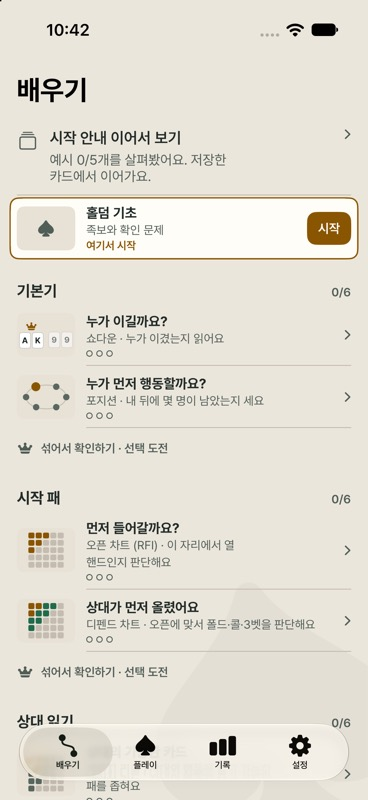
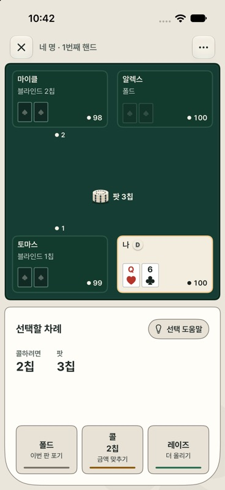

iPhone 앱 · 개인 프로젝트TestFlight 베타
Glass Table
가르치는 걸 좋아해서, 포커를 처음 배우는 사람을 위해 만든 iPhone 앱입니다. 예제를 보고 도움을 받아 푼 뒤 혼자 풀도록 수업을 구성했고, 혼자 푼 기록에 맞춰 복습할 문제를 고릅니다. 계정 없이 오프라인으로 사용할 수 있으며, 학습 기록은 기기에 저장됩니다.
- Swift
- SwiftUI
문제 생성시드 고정
승률 계산모든 경우
복습 일정FSRS-6
저장원자적 쓰기
- 문제 생성
같은 시드와 순번이면 언제나 같은 문제가 나옵니다. 틀린 문제를 그대로 다시 만들어 확인할 수 있습니다.
- 승률 계산
남은 카드의 모든 조합을 세어 승률을 계산합니다. 무작위 표본으로 추정하지 않습니다.
- 복습 일정
혼자 푼 기록을 FSRS-6 방식에 넣어 다음에 복습할 문제를 고릅니다.
- 저장
학습 기록은 JSON 파일에 원자적으로 씁니다. 저장에 실패하면 진행 상태를 넘기지 않고 다시 저장할 때까지 기다립니다.
앱의 숫자가 맞는지 어떻게 확인했나?
출시 준비 중에 AI 에이전트로 별도 검산 프로그램을 만들어 앱의 숫자를 대조했습니다. 계산은 맞았지만 설명·표시 7곳을 고쳤고, 표본으로 추정하던 게임 중간 채점을 모든 경우를 세는 계산으로 바꿨습니다.


TestFlight 베타이며 App Store에는 아직 출시하지 않았습니다.